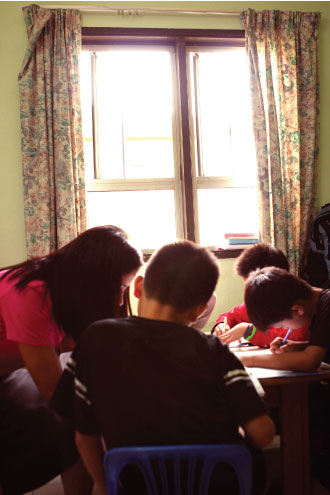
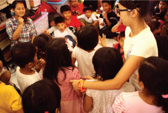

REFUGEES AND THEIR CHILDREN IN MALAYSIA
Who are refugees? According to the 1951 Convention Relating to the Status of Refugees, Article 1(a)(2): “A refugee is a person who, owing to a well-founded fear of being persecuted for reasons of race, religion, nationality, membership of a particular social group or political opinion, is outside the country of his nationality and is unable or, owing to such fear, unwilling to avail himself of the protection of that country.”
Many of these refugee children are forced to live with whatever that is given to them and more often than not, they are the receiving end of suffering. This is because they lack basic healthcare, education and the assurance of safety. Most of them will grow up not knowing what life will be like for them. With low standards of education, nil savings and the inability to make any concrete plans, it takes a lot of courage to live on. They can only depend on good hearts to extend their hands to them to make their lives worth living - in hopes that one day; they may resettle to a better country or finally return to their home country when it is safe for them to.
LIVING ON THE RUN

There are no refugee camps in Malaysia. Thus, refugees are scattered throughout the country, with most of them living in the Klang Valley. The refugees share living spaces in groups of up to 20 people - living in low-cost apartments, urban villages or housing estates side by side with Malaysians. Many also live near construction sites where they seek employment, and in make-shift camps in the jungles near Selangor.
The Malaysian law i.e. the Immigration Act 1959/1963, do not recognise a refugee nor do they make a distinction between a refugee and an economic migrant. As such, the situation of refugees has been complex as a result of their lack of official status. They are considered as illegal immigrants and therefore in principle subject to arrest, detention and deportation. Refugees in Malaysia also do not have access to legal employment and their children are not provided access to education. Some employers exploit their dire situation by paying extremely low or no wages at all and they end up accepting jobs that the locals do not wish to take - the 3D jobs i.e. dirty, dangerous and difficult ones.
In recent years, the United Nations High Commissioner for Refugees (UNHCR) has established a constructive working relationship with different Malaysian authorities to address the manifold issues refugees and asylum-seekers face in the country. In this connection, the authorities have, for instance, provided de facto recognition of UNHCR documents issued in the form of identity cards. UNHCR continues to work with the Malaysian Government towards the issuance of temporary permits for the refugee communities and several Malaysian NGOs have since come to the fore to provide practical assistance.
MAKING A DIFFERENCE
Since 2006, UNHCR approached SHELTER to help house several of these young Myanmar refugee children (below 10 years of age) pending the hearing of their parents’ cases who are currently indefinitely held at detention centres. What is certain is that these children’s parents will face deportation in time to come although some fortunate ones may get resettled in a third country like the United States but resettlement often takes a long period of time and is hard to come by. Until then, SHELTER is doing what it can, within its means to protect, and provide care and basic education to the Myanmar children living in Malaysia.
SHELTER's refugee work is headed by the Community Team at SHELTER – scope of work is to help register the children of refugees with UNHCR, to help give these children an identity. Extending the work, SHELTER also seeks to provide for the children’s care as well to organize food aid, clothings, shelter, medical care etc.
SHELTER also provides basic education for these refugee children. SHELTER coordinates with organizations, churches and corporations to provide some of these aid. Example – there is a group of children located in Subang area, SHELTER managed to secure the participation of a local church to teach English lessons to these children.
Contact us:

ShelterHomeMY

(+603)-7955 0663

No. 9, 1st Floor Jalan Barat 46200 Petaling Jaya Selangor, Malaysia
This website is not an official website of SHELTER - Home for Children.
This website was developed for the purpose of learning HTML & CSS only.
Design by Mierzad, Hisyam, Zaim, Valerie
Check their official website here!Last updated 13th January 2021.